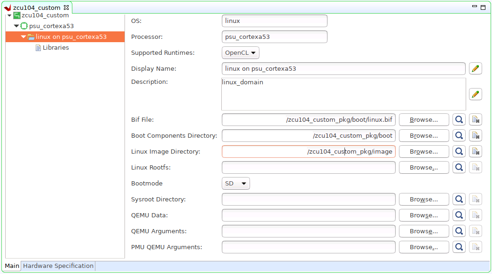

Step 3: Create the Vitis Platform¶
Prepare Files for Platform Packaging¶
We would store all the necessary files for Vitis platform creation flow. Here we name it
zcu104_custom_pkg. Then we create apfmfolder inside to hold platform creation source components.mkdir zcu104_custom_pkg cd zcu104_custom_pkg mkdir pfm
After this step, your directory hierarchy looks like this.
- zcu104_custom_platform # Vivado Project Directory - zcu104_custom_plnx # PetaLinux Project Directory - zcu104_custom_pkg # Platform Packaging Directory - pfm # Platform Packaging Sources
Install sysroot:
a) Go to
/images/linux directory. b) Type
./sdk.sh -d <Install Target Dir>to install PetaLinux SDK. use the-doption to provide a full pathname to the output directory zcu104_custom_pkg/pfm (This is an example ) and confirm.Note: The environment variable LD_LIBRARY_PATH must not be set when running this command
We would install Vitis AI library and DNNDK into this rootfs during test phase.
Create
bootdirectory andimagedirectory inside pfm directorycd zcu104_custom_pkg/pfm mkdir boot mkdir imageAfter this step, your directory hierarchy looks like this.
- zcu104_custom_platform # Vivado Project Directory - zcu104_custom_plnx # PetaLinux Project Directory - zcu104_custom_pkg # Platform Packaging Directory - sysroots # Extracted Sysroot Directory - pfm # Platform Packaging Sources - boot # Platform boot components - image # Files to be put in FAT32 partition
We’ll prepare BIF file and the files it refers to into boot directory; we’ll prepare all files needed for FAT32 partition to image directory.
Copy the generated Linux software boot components from <your_petalinux_dir>/images/linux directory to the <full_pathname_to_zcu104_custom_pkg>/pfm/boot directory to prepare for running the Vitis platform packaging flow:
zynqmp_fsbl.elf: rename as fsbl.elf as a workaround of a Vitis known issue.
pmufw.elf
bl31.elf
u-boot.elf
Note: These files are the sources of creating BOOT.BIN.
Add a BIF file (linux.bif) to the <full_pathname_to_zcu104_custom_pkg>/pfm/boot directory with the contents shown below. The file names should match the contents of the boot directory. The Vitis tool expands these pathnames relative to the sw directory of the platform at v++ link time or when generating an SD card. However, if the bootgen command is used directly to create a BOOT.BIN file from a BIF file, full pathnames in the BIF are necessary. Bootgen does not expand the names between the <> symbols.
/* linux */
the_ROM_image:
{
[fsbl_config] a53_x64
[bootloader] <fsbl.elf>
[pmufw_image] <pmufw.elf>
[destination_device=pl] <bitstream>
[destination_cpu=a53-0, exception_level=el-3, trustzone] <bl31.elf>
[destination_cpu=a53-0, exception_level=el-2] <u-boot.elf>
}
The file names in
<>are placeholders. Vitis will replace the placeholders with the relative path to platform during platform packaging. V++ packager, which runs when buiding the final application would expand it further to the full path during image packaging.Filename placeholders point to the files in boot directory. The filenames in boot directory need to match with placeholders in BIF file.
<bitstream>is a reserved keyword. V++ packager will replace it with the final system bit file.It’s a known issue that v++ packager only recognizes FSBL with
<fsbl.elf>. So for MPSoC, it’s needed to copyzynqmp_fsbl.elfthat PetaLinux generates tofsbl.elfin image directory. This issue is fixed in 2020.2.
Prepare image directory. Contents in this directory will be packaged to FAT32 partition by v++ package tool.
a) Copy the generated Linux software components from <your_petalinux_dir>/images/linux directory to the <full_pathname_to_zcu104_custom_pkg>/pfm/image directory.
boot.scr: script for u-boot initialization
system.dtb: device tree file for Linux to boot
b) Copy init.sh and platform_desc.txt from ref_files/step3_pfm/image to <full_pathname_to_zcu104_custom_pkg>/image directory.
init.sh will set environment variable XILINX_XRT for XRT and copy platform_desc.txt to /etc/xocl.txt
platform_desc.txt has the platform name. XRT OpenCL API can check the platform name before loading xclbin file to make sure they match.
User needs to run
source /mnt/sd-mmcblk0p1/init.shmanually on the target platform.
(Optional) Prepare Files to Enable Emulation¶
To run software emulation or software emulation with Vitis, we’ll need to prepare some emulation configuration files.
QEMU Data: boot components used by QEMU. It can reuse the boot directory that we’ve prepared
QEMU Arguments: QEMU arguments for launching Linux on ARM Cortex-A53
PMU QEMU Arguments: QEMU arguments for launching PMUFW on PMU
Create directory zcu104_custom_pkg/pfm/qemu
cd zcu104_custom_pkg/pfm mkdir qemuAfter this step, your directory hierarchy looks like this.
- zcu104_custom_platform # Vivado Project Directory - zcu104_custom_plnx # PetaLinux Project Directory - zcu104_custom_pkg # Platform Packaging Directory - pfm # Platform Packaging Sources - boot # Platform boot components - image # Files to be put in FAT32 partition - qemu # Emulation configuration files
Copy pmu_args.txt and qemu_args.txt from ref_files/step3_pfm/qemu/ to your qemu directory
Example of qemu_args.txt
-M
arm-generic-fdt
-serial
mon:stdio
-global
xlnx,zynqmp-boot.cpu-num=0
-global
xlnx,zynqmp-boot.use-pmufw=true
-net
nic
-net
nic
-net
nic
-net
nic
-net
user
-m
4G
-device
loader,file=<xrt/qemu/bl31.elf>,cpu-num=0
-device
loader,file=<xrt/qemu/u-boot.elf>
-boot
mode=5
Example of pmu_args.txt
-M
microblaze-fdt
-device
loader,file=<xrt/qemu/pmufw.elf>
-machine-path
.
-display
none
Create a Vitis Platform¶
First we create a Vitis platform project with the XSA file generated by Vivado from Step 1.
Go to the zcu104_custom_pkg folder you created:
cd <full_pathname_to_zcu104_custom_pkg>
Launch Vitis by typing
vitisin the console.Select zcu104_custom_pkg folder as workspace directory.
In the Vitis IDE, select File > New > Platform Project to create a platform project.
Enter the project name. For this example, type
zcu104_custom, click Next.In the Platform page,
a) Click Browse button, select the XSA file generated by the Vivado. In this case, it is
zcu104_custom_platform.xsa. b) Set the operating system to linux. c) Set the processor to psu_cortexa53. d) Architecture: 64-bit e) Uncheck option Generate boot components, because we’ll use PetaLinux generated boot components. f) Click Finish.
Next we setup software settings in Platform Settings view.
In the Platform Settings view, observe the following:
The name of the Platform Settings view matches the platform project name of zcu104_custom.
A psu_cortexa53 device icon is shown, containing a Linux on psu_cortexa53 domain.
Click the linux on psu_cortexa53 domain, browse to the locations and select the directory or file needed to complete the dialog box for the following:
Bif file: Browse to zcu104_custom_pkg/pfm/boot/linux.bif file and click OK.
Boot Components Direcotory: Browse to zcu104_custom_pkg/boot and click OK.
Linux Image Directory: Browse to zcu104_custom_pkg/image and click OK.
(Optional) Setup emulation related files
If you’ve already enabled TLM simulation model for PS in Vivado design and prepared emulation arguments, please set the arguments to platform properties to enable emulation features.
QEMU Data: Browse to zcu104_custom_pkg/pfm/boot and click OK
QEMU Arguments: Browse to qemu_args.txt and click OK
PMU QEMU Arguments: Browse to pmu_args.txt and click OK

Click zcu104_custom project in the Vitis Explorer view, click the Build button to generate the platform.

Note: The generated platform is placed in the export directory. BSP and source files are also provided for re-building the FSBL and PMU if desired and are associated with the platform. The platform is ready to be used for application development.

If you’d create an Vitis application in the same workspace as this platform, you can find this platform available in the platform selection page in platform creation wizard. If you’d like to reuse this platform in another workspace, add its path to PLATFORM_REPO_PATHS environment variable before launching Vitis GUI, or use “Add” button in platform selection page of Vitis GUI to add its path.
Next let’s try to build some applications on this platform and test them.
Fast Track¶
Scripts are provided to create the Vitis platform. To use these scripts, please run the following steps.
Run build
# cd to the step directory, e.g. cd step3_pfm make all
To clean the generated files, please run
make clean
Copyright© 2020 Xilinx